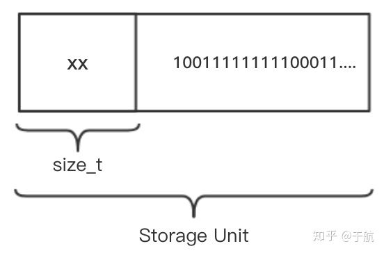

Redis 源码之内存管理 - zmalloc / zfree
之前在为 Eufa 添加本地缓存管理的功能时，基本的数据存储功能使用了简单的双向链表来实现，但由于在 Wasm32 架构上的最大可用内存只有 4GB，因此我们需要对本地内存的使用大小做一个限制，但如何才能够精确地获得应用所使用的内存大小呢？我们都知道，譬如 malloc 等标准库中的内存分配函数会根据当前的系统架构类型自动地进行4/8字节的内存对齐，因此对于应用在存储数据时底层系统实际分配的内存大小我们很难直接进行计算。
而为了解决这个问题，在这里我直接借鉴了 Redis 在其内存管理上的实现方式。如下所示，我们直接来看 Redis 源码（不是最新版本）中自定义的 zmalloc 函数，该函数与 malloc 等常规函数的使用方式完全一致，不同的在于其内部的具体实现细节。
void *zmalloc(size_t size) {
// 分配内存；
void *ptr = malloc(size + PREFIX_SIZE);
// 分配失败抛出异常；
if (!ptr) zmalloc_oom_handler(size);
// 系统是否可以使用”malloc_size“函数？
#ifdef HAVE_MALLOC_SIZE
update_zmalloc_stat_alloc(zmalloc_size(ptr));
return ptr;
#else
// 在数据域保存分配数据的实际大小；
*((size_t*)ptr) = size;
// 计算对齐后的内存使用大小，并更新”used_memory“变量；
update_zmalloc_stat_alloc(size + PREFIX_SIZE);
// 返回数据体的初始位置；
return (char*)ptr + PREFIX_SIZE;
#endif
}其实，标准库中的 malloc 函数已经能够自动为分配的内存实现对齐，因此 zmalloc 方法在这里其主要目的是为了能够精确地计算每一次数据存储时所分配的内存大小。在每一次分配内存时，zmalloc 都会在该次分配的数据内存大小的基础上再加上一个 PREFIX_SIZE 大小的额外内存空间，这个 PREFIX_SIZE 宏代表了当前系统的最大内存寻址空间大小（size_t），其依赖于具体系统的类型不同而不同。这里我们可以简称这个 PREFIX_SIZE 大小的空间为一个存储单元的“数据头”部分。

如上图所示，通过 *((size_t*)ptr) = size; 语句，Redis 在当前分配内存块的前 PREFIX_SIZE 个字节，即数据头内存储了本次实际分配的数据块大小，而在后面 ”size“ 大小的内存空间中才真正存放了二进制的数据实体。在这里名为 update_zmalloc_stat_alloc 的函数在其内部会维护一个名为 used_memory 的全局变量，该变量累加了每次新分配的内存大小。函数在最后返回了一个偏移的指针，指向了当前分配内存的数据体部分。update_zmalloc_stat_alloc 函数的具体实现细节如下。
#define update_zmalloc_stat_alloc(__n) do {
size_t _n = (__n);
// 手动内存补齐；
if (_n&(sizeof(long)-1)) _n += sizeof(long)-(_n&(sizeof(long)-1));
atomicIncr(used_memory, __n);
} while(0)这里需要注意的重点是 _n += sizeof(long)-(_n&(sizeof(long)-1)); 这行语句。整个宏函数首先判断本次分配的内存大小是否为 sizeof(long) 大小的整数倍（64位机对应着8字节的内存对齐；32位机则对应着4字节的内存对齐），如果不是则通过我们之前给出的语句在该数据段后添加相应的占位空间来补足位数以满足内存对齐（4/8字节）的要求。最后的 atomicIncr 函数用来在保证线程安全的情况下更新全局的 used_memory 变量值。
而该版本 Redis 中内存释放与其内存分配的过程则正好相反。如下所示代码为对应 “zfree” 函数的实现细节。首先该函数通过 (char*)ptr-PREFIX_SIZE 语句（向内存低地址移动）指向了包含有该数据块实际占用大小的数据域首地址，然后通过 *((size_t*)realptr) 语句获得到了该数据块分配的真实内存大小（不包含内存对齐区域）。最后再通过 update_zmalloc_stat_free 函数来更新全局变量 used_memory 的值，并释放该段内存。
void zfree(void *ptr) {
#ifndef HAVE_MALLOC_SIZE
void *realptr;
size_t oldsize;
#endif
if (ptr == NULL) return;
#ifdef HAVE_MALLOC_SIZE
update_zmalloc_stat_free(zmalloc_size(ptr));
free(ptr);
#else
realptr = (char*)ptr-PREFIX_SIZE;
oldsize = *((size_t*)realptr);
update_zmalloc_stat_free(oldsize+PREFIX_SIZE);
free(realptr);
#endif
}如下所示，这里如果我们再来看 update_zmalloc_stat_free 函数的实现细节，你会发现它与之前的 update_zmalloc_stat_alloc 函数其执行过程类似。通过计算需要补足的内存字节大小，并从 used_memory 变量中减去相应大小的内存空间，即可实现对内存空间使用率的精确计算。
#define update_zmalloc_stat_free(__n) do { \
size_t _n = (__n); \
if (_n&(sizeof(long)-1)) _n += sizeof(long)-(_n&(sizeof(long)-1)); \
atomicDecr(used_memory,__n); \
} while(0) 最后再来仔细回顾一下刚刚我们在 update_zmalloc_stat_alloc 函数中执行内存补齐操作的部分。在 Wasm32 架构中，sizeof(long) 的值是4，因此对应的补齐操作语句就变成了 if(_n&3) _n += 4 - (_n&3);，即需要满足4字节对齐。如果此时用户端有一个大小为”13字节“的数据需要存储，那么经过内存对齐处理，应用实际存放到内存中的数据大小便为：13 + 4 - 1 = 16 字节大小，内存对齐字节的计算过程可以参考下图。
以上便是 Redis 在其整体复杂设计实现过程中的一个十分细小但却精妙的设计点。